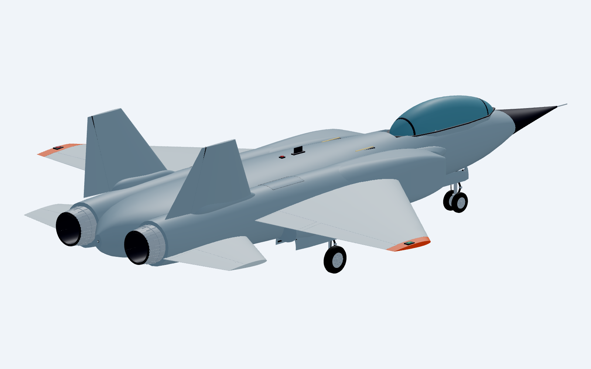
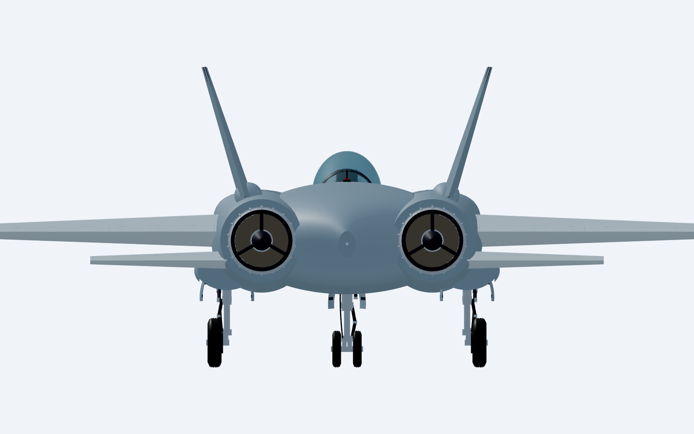

October 1, 2026 · Design manifest · Aircraft principles
The former fin-root slabs intersected each horizontal tailplane by approximately 105,527,186 mm³ (105.5 litres). The horizontal tails also crossed the exhaust envelope at their inboard roots. Hollow engine cases allowed a direct view of the inlet compressor through the rear nozzle. The earlier front-view review did not establish the rear installation.
The engine's compressor–combustor–turbine–nozzle order follows the NASA gas-turbine component layout. Blade counts, vane angles and dimensions here are concept geometry, with no aerodynamic, thermal or structural substantiation.


Native rear view · Native front view
| Check | Result | Scope |
|---|---|---|
| Native topology | 679 valid positive-volume solids | Current saved STEP |
| Surface and installation fit | 46 checked pairs, zero overlap above 0.1 mm³ | Main wing/control interfaces, moving surfaces versus fuselage, and tail/fin surfaces versus engine cases and exhaust liners |
| Root attachment | Positive measured embedding | Both fixed tailplanes and vertical fins in the fuselage; turbine blade roots in hubs; spool in shaft; all 48 combustor supports in their adjoining parts |
| Turbine blade fit | 5.836 mm neighbor gap; 1.457 mm minimum casing gap | Representative repeated blade pair in each engine |
| Rear occlusion | 360 sampled sightlines, zero unblocked | Projected turbine triangles at five aperture radii and 36 angles per engine. This is a static optical sample, not airflow analysis. |
| Export and compilation | Four wheel pivots matched; game asset hashes matched; production build passed | Exported data and TypeScript/Vite compilation. Existing bundle-size warning remains. |
No flight, gameplay or runtime aircraft tests were run. The source-defined geometry and sampled fit checks do not establish aircraft strength, thermal capability, stability, engine performance or real-world flyability. Earlier gear, door, seat and intake checks retain their dated document hashes; they are not fresh mechanism checks of this revision.
Fit and sightline measurements · Delivery hashes and scope · Export audit · Production build log
STEP master · Game GLB · Parametric source · Maintained fit check
Live CAD master · GitHub repository
bun run stormbird:build rebuilds the aircraft; bun run stormbird:inspect now includes the rear installation check and a rear snapshot; bun run stormbird:audit checks export datums; bun run stormbird:viewer starts or reuses CAD Viewer. These workflows do not fly the aircraft.